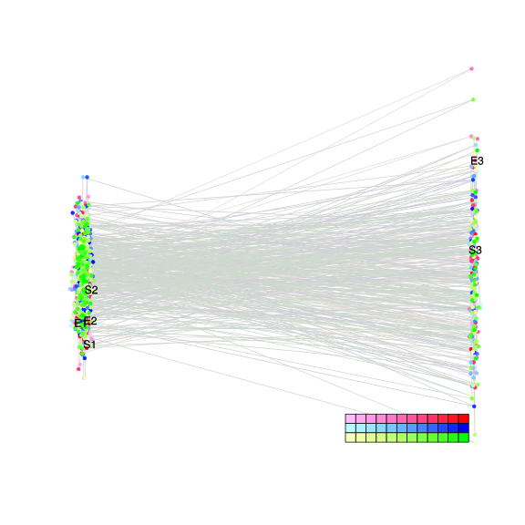
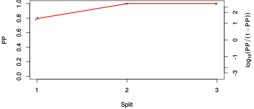
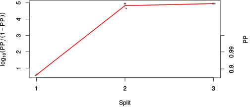

| chain # | burnin | subsample | Iterations (remaining) | command line | subdirectory | directory |
|---|---|---|---|---|---|---|
| 1 | 10000 | 1 | 90000 | bali-phy E1_AA_red3_Alpha.fas -s 45132 -n Alpha_c1 | Alpha_c1-1 | /DATA/work/ONCOGENEVOL/database/trees/Bali-Phy/red3/E1 |
| 2 | 10000 | 1 | 90000 | bali-phy E1_AA_red3_Alpha.fas -s 23463 -n Alpha_c2 | Alpha_c2-1 | /DATA/work/ONCOGENEVOL/database/trees/Bali-Phy/red3/E1 |
| 3 | 10000 | 1 | 90000 | bali-phy E1_AA_red3_Alpha.fas -s 96432 -n Alpha_c3 | Alpha_c3-1 | /DATA/work/ONCOGENEVOL/database/trees/Bali-Phy/red3/E1 |
| P(data|M) = -7702.999 +- 0.380 | Complete sample: 4 topologies | 95% Bayesian credible interval: 2 topologies |

Phylogeny Distribution

| Partition support: Summary |
| Partition support graph: SVG |
| 50% consensus | Newick (+PP) | SVG | |||||
| 66% consensus | Newick (+PP) | SVG | |||||
| 80% consensus | Newick (+PP) | SVG | |||||
| 90% consensus | Newick (+PP) | SVG | |||||
| 95% consensus | Newick (+PP) | SVG | |||||
| 99% consensus | Newick (+PP) | SVG | |||||
| 100% consensus | Newick (+PP) | SVG | |||||
| MAP | Newick (+PP) | SVG | |||||
| greedy | Newick (+PP) | SVG |
{kind=link}
{kind=link}
{kind=link}
{kind=link}
{kind=link}
{kind=link}
{kind=link}
{kind=link}
Alignment Distribution
Partition 1
| Diff | Min. %identity | # Sites | Constant | Informative | ||||
|---|---|---|---|---|---|---|---|---|
| Initial | FASTA | HTML | Diff | 5.16% | 698 | 2 (0.287%) | 100 (14.3%) | |
| Best (WPD) | FASTA | HTML | AU | 30.1% | 926 | 135 (14.6%) | 182 (19.7%) |


Mixing
| burnin (scalar) | ESS (scalar) | ESS (partition) | ASDSF | MSDSF | PSRF-CI80% | PSRF-RCF |
|---|---|---|---|---|---|---|
| 930 | 2633 | 3468.689 | 0.007 | 0.013 | 1 | 1.008 |
Projection of RF distances for the first 3 chains3D | Variation of split PPs across chains |
Scalar variables
| Statistic | Median | 95% BCI | ACT | ESS | burnin | PSRF-CI80% | PSRF-RCF |
|---|---|---|---|---|---|---|---|
| prior | -492.1 | (-555.4, -434.7) | 99.35 | 2717 | 828 | 1 | 1 |
| prior_A1 | -473.1 | (-534.9, -415.7) | 98.6 | 2738 | 826 | 1 | 0.9987 |
| likelihood | -7667 | (-7702, -7629) | 83.94 | 3216 | 305 | 0.9998 | 1.003 |
| logp | -8159 | (-8202, -8120) | 79.24 | 3407 | 930 | 1 | 1 |
| Heat.beta | 1 | ||||||
| Scale1 | 2.204 | (0.8639, 4.532) | 1.021 | 264559 | 115 | 0.9993 | 0.9962 |
| S1.F.pi.A | 0.07888 | (0.06764, 0.09057) | 8.065 | 33477 | 367 | 1 | 1.002 |
| S1.F.pi.R | 0.04067 | (0.03245, 0.04964) | 7.89 | 34222 | 374 | 1 | 0.9994 |
| S1.F.pi.N | 0.03518 | (0.02813, 0.04276) | 8.349 | 32340 | 367 | 1 | 1.006 |
| S1.F.pi.D | 0.06555 | (0.05503, 0.07683) | 8.491 | 31800 | 353 | 1 | 0.9949 |
| S1.F.pi.C | 0.04856 | (0.03799, 0.05982) | 8.382 | 32211 | 391 | 1 | 1.004 |
| S1.F.pi.Q | 0.05085 | (0.04208, 0.05993) | 10.19 | 26484 | 336 | 1 | 0.9964 |
| S1.F.pi.E | 0.06928 | (0.05924, 0.07993) | 8.935 | 30217 | 189 | 1 | 1.001 |
| S1.F.pi.G | 0.08293 | (0.06949, 0.09699) | 9.509 | 28395 | 355 | 1 | 0.9965 |
| S1.F.pi.H | 0.01982 | (0.0143, 0.02586) | 7.765 | 34773 | 476 | 1 | 1.001 |
| S1.F.pi.I | 0.05011 | (0.04105, 0.05955) | 7.956 | 33939 | 206 | 0.9999 | 1.008 |
| S1.F.pi.L | 0.08845 | (0.0755, 0.1018) | 7.969 | 33881 | 360 | 0.9999 | 0.9946 |
| S1.F.pi.K | 0.04639 | (0.03809, 0.05536) | 8.12 | 33251 | 224 | 0.9998 | 1.002 |
| S1.F.pi.M | 0.01782 | (0.01279, 0.02353) | 7.918 | 34098 | 354 | 0.9996 | 0.9901 |
| S1.F.pi.F | 0.03345 | (0.02522, 0.04195) | 8.148 | 33136 | 633 | 1 | 0.9998 |
| S1.F.pi.P | 0.04619 | (0.03638, 0.05666) | 8.846 | 30521 | 426 | 0.9997 | 0.9961 |
| S1.F.pi.S | 0.05686 | (0.04777, 0.06662) | 8.702 | 31026 | 289 | 0.9998 | 1.002 |
| S1.F.pi.T | 0.06543 | (0.05508, 0.07612) | 8.793 | 30707 | 476 | 1 | 1 |
| S1.F.pi.W | 0.01077 | (0.006002, 0.0163) | 8.219 | 32852 | 210 | 1 | 1.006 |
| S1.F.pi.Y | 0.02309 | (0.01655, 0.0302) | 7.843 | 34425 | 386 | 1 | 1 |
| S1.F.pi.V | 0.0668 | (0.05593, 0.07792) | 8.966 | 30115 | 511 | 0.9997 | 0.9942 |
| I1.RS07.meanIndelLengthMinus1 | 6.148 | (3.96, 8.865) | 30.95 | 8725 | 171 | 1 | 1 |
| I1.RS07.logLambda | -4.013 | (-4.339, -3.702) | 19.32 | 13974 | 392 | 0.9997 | 1.002 |
| |A1| | 881 | (840, 922) | 102.5 | 2632 | 248 | 0.975 | 1.002 |
| #indels1 | 52 | (45, 61) | 94.48 | 2857 | 439 | 0.8824 | 0.9992 |
| |indels1| | 377 | (298, 457) | 47.07 | 5736 | 400 | 0.9968 | 1.003 |
| #substs1 | 1144 | (1110, 1174) | 94.26 | 2864 | 218 | 1 | 1.006 |
| Scale1*|T| | 2.404 | (2.244, 2.569) | 9.259 | 29159 | 133 | 1 | 0.9996 |
| |A| | 881 | (840, 922) | 102.5 | 2632 | 248 | 0.975 | 1.002 |
| #indels | 52 | (45, 61) | 94.48 | 2857 | 439 | 0.8824 | 0.9992 |
| |indels| | 377 | (298, 457) | 47.07 | 5736 | 400 | 0.9968 | 1.003 |
| #substs | 1144 | (1110, 1174) | 94.26 | 2864 | 218 | 1 | 1.006 |
| |T| | 1.091 | (0.388, 2.072) | 1 | 270003 | 115 | 0.9999 | 0.9971 |